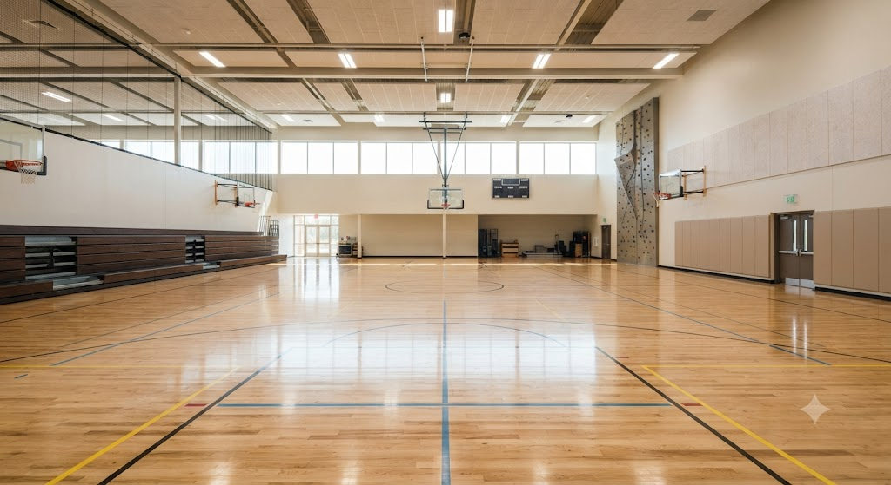
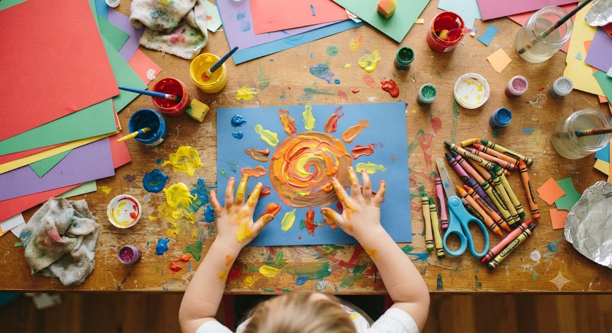
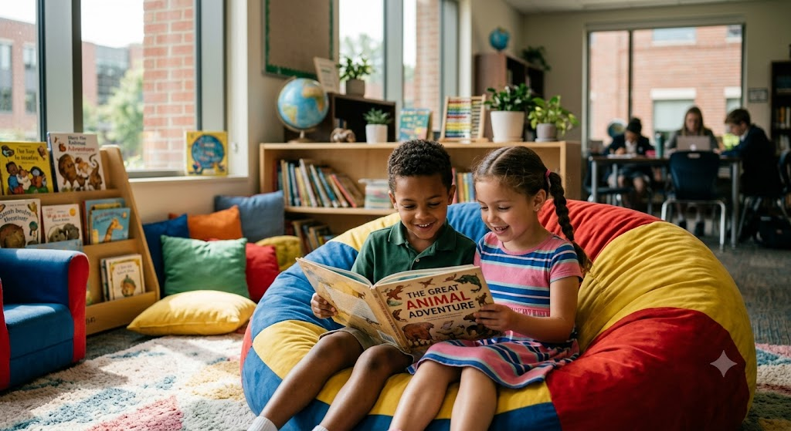

The Learning Journey
A curriculum designed to challenge, inspire, and prepare students for a rapidly changing world.
Kindergarten Program
Building Strong Foundations
Through phonics, storytelling, and interactive play, we build a robust foundation in reading and verbal communication.
Numbers are Fun
We introduce mathematical concepts through hands-on activities, puzzles, and real-world problem-solving games.
Understanding Our World
Basic science and geography are introduced by exploring nature, understanding seasons, and observing the environment.
Primary Curriculum
Mathematics
Science
Language Arts
Social Studies
Computer Science
Visual Arts
Music
Physical Ed.
Our Teaching Methodology
Inquiry-Based Learning
We encourage students to ask questions, investigate, and discover answers independently.
Collaborative Projects
Teamwork is emphasized to build social skills and diverse problem-solving approaches.
Technology Integration
Smartboards and tablets are used thoughtfully to enhance traditional learning methods.
Beyond the Classroom



World-Class Resources
Our campus features an extensive physical library, digital research labs, and dedicated STEM environments that provide students with every tool they need to succeed.
View Campus Tour